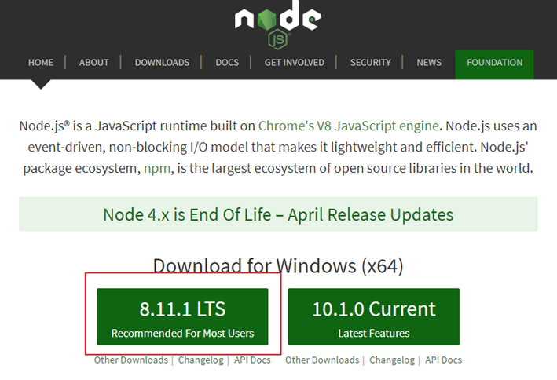

CH0.Angular
環境建置
Angular CLI
package.json設定
TypeScript配置
NgModule
CH1.建立元件
Component
資料繫結的模版語法
Hooks的生命週期
Directive Attribute
Directive Structure
Pipe
CH2-Service
Create Service
Arrow Function/Promise
Subscribe
CH3-Route
Create Route
Redirect/Parameter
CanActive/Guild
CH4-Form
Template-Driven Forms
Reactive Forms (Model-Driven Forms)
CH5-Other
主從元件
共用元件
Lazy Load
CH6-PlugIn
Angular-PlugIn
Js-PlugIn
CH7-Animate
製作中
CH8-Angular Metiral
製作中
CH9-產品發佈設定
製作中
參考文件
Published with GitBook
環境建置
Angular 環境與安裝
STEP1 安裝NodeJS
1.至Node.js官方(
https://nodejs.org/
) 下載Node.js並安裝。 
results matching "
"
No results matching "
"